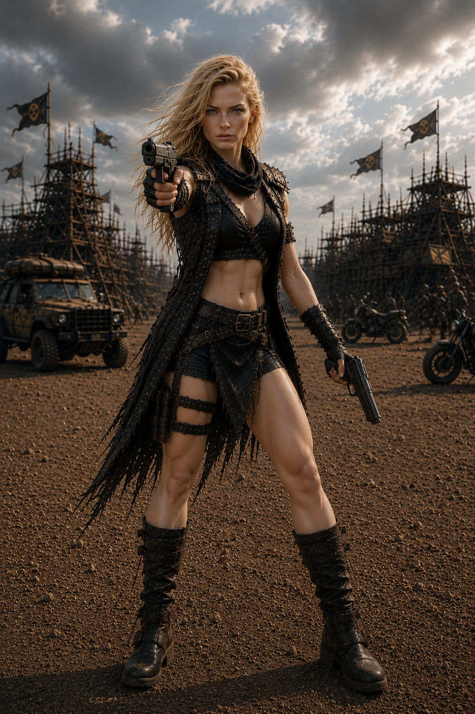

ACERVO PRESERVADO // MA-01
Pollyana.
13 IMAGENS ARQUIVO SOLO
Pollyana.
Em cada travessia.
Treze imagens individuais. Nenhuma cena recebeu data, missão ou função por dedução da fotografia.
EXPLORAR REGISTROSO presente
em fragmentos.
Use as setas ou as miniaturas para percorrer as fotografias. As cinco imagens acrescentadas ao acervo aparecem no fim da sequência; a foto conjunta dos gêmeos permanece no dossiê familiar.
0113